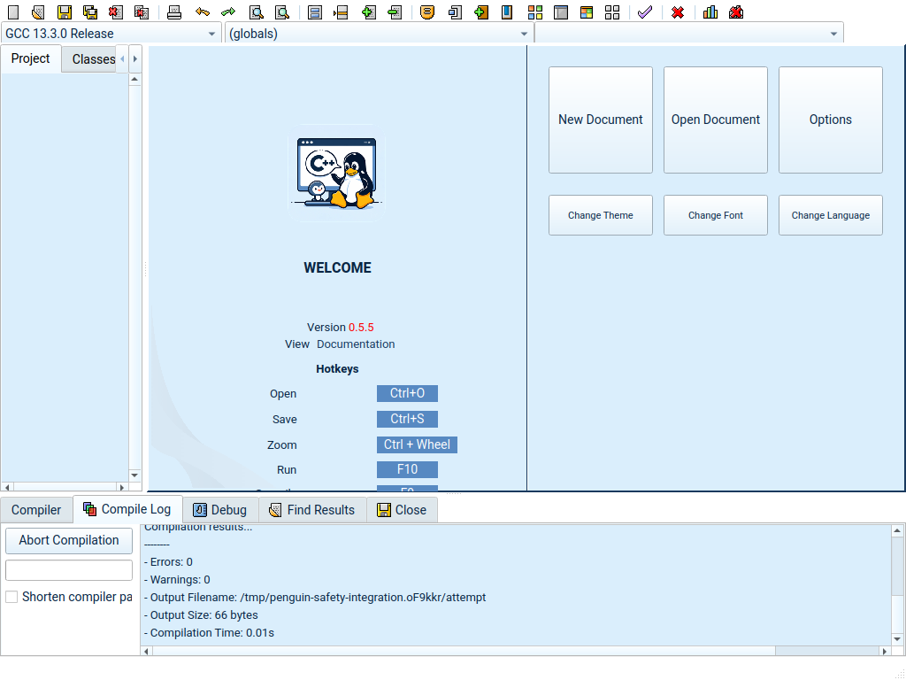
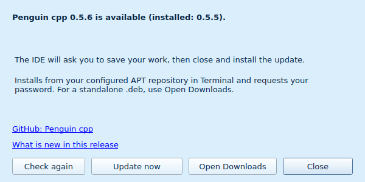
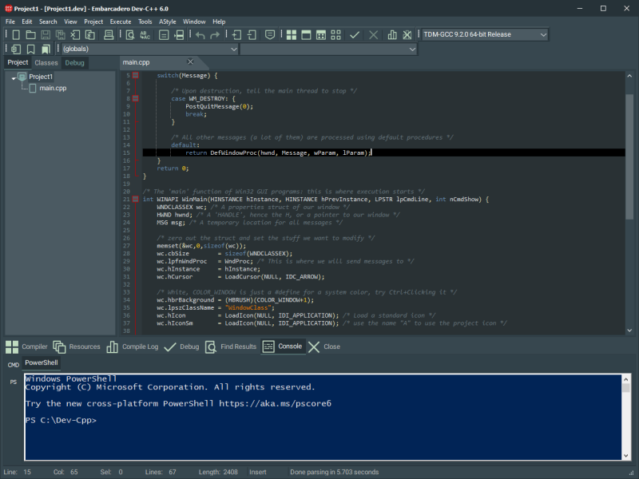

0.5.6
HOTFIX · IDIOMASRecupera los idiomas al abrir configuraciones antiguas con valores entre comillas. Corrige el lector compartido sin exigir borrar tus preferencias.
Notas del hotfixEL ESPÍRITU DE DEV-C++ · OTROS HORIZONTES
Un lugar sencillo para aprender C y C++. El entorno que conoces, con una nueva vida en Linux y macOS.

EL PROGRAMA
Escribe, compila y entiende lo que ocurre. Penguin conserva la forma directa de trabajar de Dev-C++, con herramientas e interfaz propias de tu sistema.
Aprende a usarlo en el manualgraphics.h/WinBGIm.POR DENTRO
Capturas reales del programa.
Bienvenida, herramientas y origen.


DE DÓNDE VENIMOS
Penguin no empezó desde cero. Continúa una familia de software libre y conserva el historial y los avisos del código original.
Dev-C++
Colin Laplace y colaboradores. El comienzo de la familia de la que nace este proyecto.
Proyecto originalDev-C++
Johan Mes y colaboradores continuaron el entorno y su desarrollo como software libre.
Proyecto OrwellDev-C++
Un fork para Windows construido con Delphi y VCL. Su código es el punto de partida de Penguin.
Código e historia
Linux y macOS
Lazarus, Free Pascal y la LCL sustituyen las dependencias de Windows para dar al IDE una vida nativa.
El camino del portPorque aprender C y C++ no debería obligarte a cambiar de sistema. Estudiantes y docentes que conocen Dev-C++ en Windows necesitan una herramienta familiar también en Linux.
Penguin nace con un propósito educativo y de divulgación: conservar un entorno ligero, documentar su transformación y permitir que otras personas estudien y continúen el trabajo. El port se extendió después a macOS con Apple Silicon.
Fuentes: origen de Penguin, README de Embarcadero y historial del port. Penguin es un proyecto independiente, sin afiliación a Embarcadero.
A TU SISTEMA
Paquetes amd64 para Ubuntu 24.04 y la base de Linux Mint 22. El paquete incluye LLVM-MinGW/UCRT; APT instala GNU Make y el motor WineHQ 11 privado como dependencias.
El motor privado no reemplaza el Wine del sistema. Otras distribuciones y arquitecturas necesitan validación propia.
Descargar los paquetes .debPara instalación manual, descarga e instala juntos el DEB del IDE y el del motor privado.
TERMINAL · AGREGAR EL REPOSITORIO
curl -fsSL https://juanfrang.github.io/Penguin-cpp/penguin-cpp.gpg | sudo tee /usr/share/keyrings/penguin-cpp.gpg > /dev/null
echo "deb [signed-by=/usr/share/keyrings/penguin-cpp.gpg] https://juanfrang.github.io/Penguin-cpp stable main" | sudo tee /etc/apt/sources.list.d/penguin-cpp.list
sudo apt update
sudo apt install penguin-cppsudo apt update
sudo apt install --only-upgrade penguin-cppapt update solo refresca los índices. El segundo comando actualiza Penguin y APT resuelve sus dependencias. El botón Actualizar del programa realiza ambos pasos.
sudo apt remove penguin-cpp
# Opcional: dependencias que ya no se utilizan
sudo apt autoremoveSi también quieres retirar el repositorio:
sudo rm /etc/apt/sources.list.d/penguin-cpp.list /usr/share/keyrings/penguin-cpp.gpgTus preferencias permanecen en ~/.config/penguin-cpp.
macOS 26 o posterior, con Apple Silicon. El PKG y el DMG completos incluyen LLVM-MinGW, GNU Make y Wine ARM64/FEX. Ese motor no necesita Rosetta.
Edición experimental, sin firma Developer ID ni notarización. Revisa las instrucciones de apertura en las notas de la descarga.
Descargar PKG o DMGBITÁCORA DEL PROYECTO
Lo que se añadió, lo que se corrigió y lo que todavía necesita trabajo. Las notas completas acompañan a cada entrega.
Todas las publicacionesRecupera los idiomas al abrir configuraciones antiguas con valores entre comillas. Corrige el lector compartido sin exigir borrar tus preferencias.
Notas del hotfixGuardado atómico, ejecución coherente, recuperación del entorno Windows y perfiles UTF-8, OEM 437 y ANSI 1252. Bienvenida y Acerca de reorganizados.
Cambios, pruebas y pendientesPKG completo, preparación automática del entorno y verificación al iniciar, también desde Terminal. Protección frente a actualizaciones incompletas.
Notas de la versiónModos Automático, Nativo y Windows. Correcciones de repintado Cocoa y barras que aprovechan el ancho de la ventana.
Notas de la versiónBúsqueda e instalación de actualizaciones, adjuntar a procesos nativos y correcciones en objetos de compilación e instalación.
Notas de la versiónACERCA DE PENGUIN CPP
Creado por Juan Francisco Gonzalez Pacheco, Ingeniería de Sistemas, Universidad del Magdalena.
Un proyecto educativo y de divulgación construido sobre el trabajo de Colin Laplace, Johan Mes, Embarcadero y sus colaboradores. Lazarus, Free Pascal y SynEdit hacen posible su interfaz nativa.
El desarrollo, las revisiones, las pruebas y la documentación han contado con asistencia de Claude Opus 5.5 (Anthropic) y Chat GPT 6.1 Sol (OpenAI). La autoría y las decisiones del proyecto corresponden a Juan Francisco Gonzalez Pacheco.
También se reconoce el trabajo de Artistic Style, los autores de los temas y las dependencias del entorno de compatibilidad. Consulta los créditos completos y los avisos de terceros.
SIGAMOS MEJORÁNDOLO
Indica la versión, tu sistema, los pasos y lo que esperabas. Una captura, el archivo de ejemplo y penguin-cpp-errores.txt del Escritorio ayudan a reproducirlo.